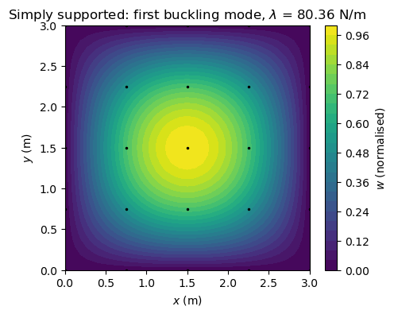
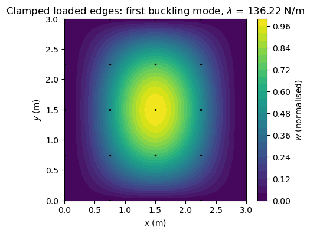
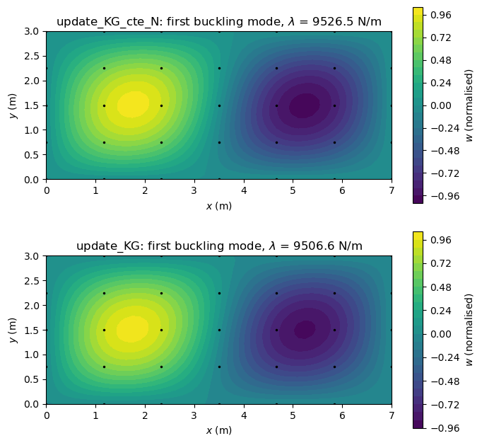

Linear buckling analysis#
Three linear buckling analyses of flat plates under a compression along \(x\):
a simply supported square isotropic plate, against the buckling coefficient \(k_c = 4\) of the closed-form solution [1], with the geometric stiffness matrix of
update_KGcomputed with a linear static solution, and the same eigenvalue problem solved withstructsolve.lb;the same plate with clamped loaded edges, against the exact buckling coefficient of Pflüger [2];
a laminated plate, with the geometric stiffness matrix of
update_KG_cte_Nfor uniform membrane forces and with that ofupdate_KGof a static solution, comparing the two sets of load multipliers.
The same models are checked in tests/test_linear_buckling_iso_SSSS.py, tests/test_linear_buckling_iso_CCSS.py, tests/test_linear_buckling_cte_N.py and tests/test_linear_buckling.py.
Theory#
Under the in-plane load \(\lambda \boldsymbol{F}_{ext}\) a flat plate with \(\boldsymbol{B} = \boldsymbol{0}\) has the linear pre-buckling state \(\lambda \boldsymbol{u}_0\), \(\boldsymbol{K}_{C0}\boldsymbol{u}_0 = \boldsymbol{F}_{ext}\), without deflection. The tangent stiffness matrix along this path is \(\boldsymbol{K}_{C0} + \lambda \boldsymbol{K}_G(\boldsymbol{u}_0)\), since \(\boldsymbol{K}_G\) is linear in the displacements, and a bifurcation occurs where it becomes singular:
with the load multipliers \(\lambda\) and the buckling modes \(\boldsymbol{\phi}\), restricted to the unconstrained degrees of freedom. \(\boldsymbol{K}_{C0}\) is positive definite and \(\boldsymbol{K}_G\) symmetric and indefinite. eigsh is called with A = KG and M = KC0, i.e. it solves the equivalent problem \(\boldsymbol{K}_G \boldsymbol{\phi} = \mu
\boldsymbol{K}_{C0} \boldsymbol{\phi}\) with \(\mu = -1/\lambda\), in the shift-invert mode 'cayley', and the load multipliers are recovered as \(\lambda = -1/\mu\). With a reference load of a unit compressive force per unit length, the load multipliers are the critical forces per unit length.
The imports, and two helpers used in the three sections: Mesh builds the nodes, the elements and \(\boldsymbol{K}_{C0}\) of a rectangular plate of \(n_x\) by \(n_y\) nodes, assembles \(\boldsymbol{K}_G\) and gives the consistent edge load; w_field interpolates \(w\) inside the elements for the plots of the buckling modes.
[1]:
%matplotlib inline
import numpy as np
from numpy import isclose
from scipy.sparse import coo_matrix
from scipy.sparse.linalg import eigsh, spsolve
from scipy.optimize import brentq
import matplotlib.pyplot as plt
from composites import isotropic_plate, laminated_plate
from structsolve import lb
from bfscplate2d import (BFSCPlate2D, update_KC0, update_KG, update_KG_cte_N,
DOF, KC0_SPARSE_SIZE, KG_SPARSE_SIZE, DOUBLE, INT)
from bfscplate2d.quadrature import get_points_weights
[2]:
class Mesh(object):
"""Rectangular plate of a by b on nx by ny nodes, with KC0 assembled.
Node connectivity similar to Nastran's CQUAD4:
4 ________ 3
| |
| | --> x
|_______|
1 2
"""
def __init__(self, a, b, nx, ny, ABD, nint=4):
self.a, self.b, self.nx, self.ny, self.nint = a, b, nx, ny, nint
self.points, self.weights = get_points_weights(nint=nint)
xlin = np.linspace(0, a, nx)
ylin = np.linspace(0, b, ny)
self.xmesh, self.ymesh = np.meshgrid(xlin, ylin)
ncoords = np.vstack((self.xmesh.T.flatten(), self.ymesh.T.flatten())).T
self.x, self.y = ncoords[:, 0], ncoords[:, 1]
nids = 1 + np.arange(ncoords.shape[0])
self.nid_pos = nid_pos = dict(zip(nids, np.arange(len(nids))))
nids_mesh = nids.reshape(nx, ny)
n1s = nids_mesh[:-1, :-1].flatten()
n2s = nids_mesh[1:, :-1].flatten()
n3s = nids_mesh[1:, 1:].flatten()
n4s = nids_mesh[:-1, 1:].flatten()
num_elements = len(n1s)
self.N = N = DOF*nx*ny
Kr = np.zeros(KC0_SPARSE_SIZE*num_elements, dtype=INT)
Kc = np.zeros(KC0_SPARSE_SIZE*num_elements, dtype=INT)
Kv = np.zeros(KC0_SPARSE_SIZE*num_elements, dtype=DOUBLE)
self.KGr = np.zeros(KG_SPARSE_SIZE*num_elements, dtype=INT)
self.KGc = np.zeros(KG_SPARSE_SIZE*num_elements, dtype=INT)
self.KGv = np.zeros(KG_SPARSE_SIZE*num_elements, dtype=DOUBLE)
init_k_KC0 = 0
init_k_KG = 0
self.plates = []
for n1, n2, n3, n4 in zip(n1s, n2s, n3s, n4s):
plate = BFSCPlate2D()
plate.n1, plate.n2, plate.n3, plate.n4 = n1, n2, n3, n4
plate.c1 = DOF*nid_pos[n1]
plate.c2 = DOF*nid_pos[n2]
plate.c3 = DOF*nid_pos[n3]
plate.c4 = DOF*nid_pos[n4]
plate.ABD = ABD
plate.lex = a/(nx - 1)
plate.ley = b/(ny - 1)
plate.init_k_KC0 = init_k_KC0
plate.init_k_KG = init_k_KG
update_KC0(plate, self.points, self.weights, Kr, Kc, Kv)
init_k_KC0 += KC0_SPARSE_SIZE
init_k_KG += KG_SPARSE_SIZE
self.plates.append(plate)
self.KC0 = coo_matrix((Kv, (Kr, Kc)), shape=(N, N)).tocsc()
def KG(self, u):
"""K_G of update_KG with the displacements u."""
self.KGv *= 0
for plate in self.plates:
update_KG(u, plate, self.points, self.weights,
self.KGr, self.KGc, self.KGv)
return coo_matrix((self.KGv, (self.KGr, self.KGc)),
shape=(self.N, self.N)).tocsc()
def KG_cte_N(self, Nxx, Nyy, Nxy):
"""K_G of update_KG_cte_N with the same membrane forces in every
element."""
self.KGv *= 0
for plate in self.plates:
update_KG_cte_N(Nxx, Nyy, Nxy, plate, self.points, self.weights,
self.KGr, self.KGc, self.KGv)
return coo_matrix((self.KGv, (self.KGr, self.KGc)),
shape=(self.N, self.N)).tocsc()
def edge_load_x(self, Nxx):
"""Consistent load of a compressive force per unit length -Nxx at
x = 0 and x = a, integrated with the rows Su at xi = -1 and +1."""
x = self.x
fext = np.zeros(self.N)
for plate in self.plates:
pos1 = self.nid_pos[plate.n1]
pos3 = self.nid_pos[plate.n3]
if isclose(x[pos3], self.a):
sign, xi = +1, +1
elif isclose(x[pos1], 0):
sign, xi = -1, -1
else:
continue
indices = np.concatenate([np.arange(c, c + DOF) for c in
(plate.c1, plate.c2, plate.c3, plate.c4)])
fe = np.zeros(4*DOF)
for j in range(self.nint):
plate.update_Su(xi, self.points[j])
fe += plate.ley/2*self.weights[j]*np.asarray(plate.Su)*sign*Nxx
fext[indices] += fe
return fext
[3]:
def w_field(plates, u, nx, ny, n=9):
"""The deflection w interpolated with the rows Sw of each element on
n by n points per element, for the contour plots."""
lex, ley = plates[0].lex, plates[0].ley
X = np.linspace(0, (nx - 1)*lex, (nx - 1)*(n - 1) + 1)
Y = np.linspace(0, (ny - 1)*ley, (ny - 1)*(n - 1) + 1)
W = np.zeros((Y.size, X.size))
xis = np.linspace(-1, 1, n)
for plate in plates:
ue = np.concatenate([u[c:c + DOF] for c in
(plate.c1, plate.c2, plate.c3, plate.c4)])
pos1 = plate.c1//DOF
ix0, iy0 = pos1//ny, pos1 % ny
for i, xi in enumerate(xis):
for j, eta in enumerate(xis):
plate.update_Sw(xi, eta)
W[iy0*(n - 1) + j, ix0*(n - 1) + i] = np.asarray(plate.Sw) @ ue
Xmesh, Ymesh = np.meshgrid(X, Y)
return Xmesh, Ymesh, W
1. Simply supported square plate#
The critical force per unit length of the simply supported plate of sides \(a\) and \(b\) under a uniform compression \(N_{xx}\) is [1]
with \(m\) the number of half-waves along \(x\), minimum \(k_c = 4\) for \(m = a/b = 1\). The plate has \(a = b = 3\) m, \(h = 1\) mm, \(E = 200\) GPa and \(\nu = 0.3\), on a mesh of 5 by 5 nodes.
Along an edge \(x\) = constant the interpolated \(w\) depends only on \(w\) and \(w_{,y}\) at the two nodes of the edge, so the simply supported edge constrains both (\(w\) and \(w_{,x}\) on the edges \(y\) = constant), while \(w_{,xy}\) stays free, also at the corners. The in-plane rigid-body motions are removed by point supports, \(u\) at the middle nodes of the edges \(y = 0\) and \(y = b\) and \(v\) at the middle nodes of the edges
\(x = 0\) and \(x = a\). The unit compression is a consistent edge load, integrated with the rows of BFSCPlate2D.update_Su at \(\xi = \pm 1\), and \(\boldsymbol{K}_G\) comes from the linear static solution \(\boldsymbol{u}_0\) of this load.
[4]:
# geometry, material and mesh
a = 3. # along x
b = 3. # along y
E = 200e9
nu = 0.3
h = 0.001
nx, ny = 5, 5
lam = isotropic_plate(thickness=h, E=E, nu=nu)
mesh = Mesh(a, b, nx, ny, lam.ABD)
x, y = mesh.x, mesh.y
print('elements', len(mesh.plates), ', degrees of freedom', mesh.N)
# simply supported: w and its derivative along the edge
bk = np.zeros(mesh.N, dtype=bool)
edges_x = isclose(x, 0) | isclose(x, a)
edges_y = isclose(y, 0) | isclose(y, b)
bk[6::DOF] = edges_x | edges_y
bk[8::DOF] = edges_x
bk[7::DOF] = edges_y
# point supports
bk[0::DOF] = isclose(x, a/2) & edges_y
bk[3::DOF] = isclose(y, b/2) & edges_x
bu = ~bk
# unit compressive force per unit length and pre-buckling state
fext = mesh.edge_load_x(Nxx=-1.)
Kuu = mesh.KC0[bu, :][:, bu]
u0 = np.zeros(mesh.N)
u0[bu] = spsolve(Kuu, fext[bu])
# linear buckling
KGuu = mesh.KG(u0)[bu, :][:, bu]
num_eigenvalues = 5
eigvals, eigvecsu = eigsh(A=KGuu, k=num_eigenvalues, which='SM', M=Kuu,
tol=1e-6, sigma=1., mode='cayley')
eigvals = -1./eigvals
eigvecs = np.zeros((mesh.N, num_eigenvalues))
eigvecs[bu, :] = eigvecsu
D = E*h**3/(12*(1 - nu**2))
Nxxcr_ref = 4*np.pi**2*D/b**2
kc = eigvals[0]/(np.pi**2*D/b**2)
print()
print('%-22s %12s %12s %12s' % ('', 'computed', 'reference', 'rel. diff.'))
print('%-22s %12.4f %12.4f %+11.4f%%' % ('N_xx,cr (N/m)', eigvals[0],
Nxxcr_ref, 100*(eigvals[0] - Nxxcr_ref)/Nxxcr_ref))
print('%-22s %12.5f %12.5f %+11.4f%%' % ('k_c', kc, 4., 100*(kc - 4)/4))
elements 16 , degrees of freedom 250
computed reference rel. diff.
N_xx,cr (N/m) 80.3595 80.3387 +0.0260%
k_c 4.00104 4.00000 +0.0260%
The same eigenvalue problem solved with the linear buckling solver of structsolve, structsolve.lb(Kuu, KGuu), which returns the load multipliers \(\lambda\) directly:
[5]:
eigvals_lb, _ = lb(Kuu, KGuu, num_eigvalues=num_eigenvalues,
symmetric=True, silent=True)
print('%-6s %16s %16s %12s' % ('mode', 'eigsh', 'structsolve.lb',
'rel. diff.'))
for i in range(num_eigenvalues):
print('%-6d %16.8f %16.8f %12.2e' % (i + 1, eigvals[i], eigvals_lb[i],
(eigvals_lb[i] - eigvals[i])/eigvals[i]))
mode eigsh structsolve.lb rel. diff.
1 80.35952190 80.35952190 2.09e-14
2 126.13440693 126.13440693 4.36e-14
3 229.17568919 229.17568919 2.90e-14
4 322.61978249 322.61978249 1.52e-13
5 383.35979689 383.35979684 -1.29e-10
[6]:
Xf, Yf, Wf = w_field(mesh.plates, eigvecs[:, 0], nx, ny)
Wf /= Wf[np.unravel_index(np.abs(Wf).argmax(), Wf.shape)]
plt.figure(figsize=(5, 4))
plt.gca().set_aspect('equal')
plt.contourf(Xf, Yf, Wf, levels=30, cmap='viridis')
plt.colorbar(label='$w$ (normalised)')
plt.plot(x, y, 'k.', ms=3)
plt.xlabel('$x$ (m)')
plt.ylabel('$y$ (m)')
plt.title('Simply supported: first buckling mode, $\\lambda$ = %.2f N/m'
% eigvals[0])
plt.show()

The computed critical force per unit length, 80.36 N/m, gives \(k_c = 4.0010\), 0.026 % above the closed-form value; with 9 by 9 nodes the difference drops to 0.0016 %. The first mode has one half-wave in each direction, \(m = 1\). The five load multipliers of eigsh and of structsolve.lb agree within a relative difference of \(1.3 \times
10^{-10}\).
2. Square plate with clamped loaded edges#
The same plate, with the loaded edges \(x = 0\) and \(x = a\) clamped and the edges \(y = 0\) and \(y = b\) simply supported. The interpolated \(w_{,x}\) along an edge \(x\) = constant depends only on \(w_{,x}\) and \(w_{,xy}\) at the two nodes of the edge, so the clamped edge adds both to the constraints of the simply supported one. The buckling coefficient
is compared with the exact solution of this plate under a uniform compression [2]. With \(w = \sin(\pi y/b) f(x)\) the buckling mode is symmetric or antisymmetric about \(x = a/2\), and \(f = 0\), \(f_{,x} = 0\) on the loaded edges give the characteristic equations
of the symmetric and of the antisymmetric modes, with \(\alpha = a/b\); the smallest root \(k_c\) of the two is the reference. The roots are bracketed on a grid of \(k_c > 4\) and refined with brentq, discarding the sign changes at the poles of the tangent. Bruhn [3], Fig. C5.2, case C, gives the same case as a curve, from which \(k_c \approx 6.6\) is read for the square plate.
[7]:
# simply supported edges, as in section 1
bk = np.zeros(mesh.N, dtype=bool)
bk[6::DOF] = edges_x | edges_y
bk[8::DOF] = edges_x
bk[7::DOF] = edges_y
# clamped loaded edges: the normal slope and its derivative along the edge
bk[7::DOF] |= edges_x
bk[9::DOF] |= edges_x
# point supports
bk[0::DOF] = isclose(x, a/2) & edges_y
bk[3::DOF] = isclose(y, b/2) & edges_x
bu = ~bk
Kuu = mesh.KC0[bu, :][:, bu]
u0 = np.zeros(mesh.N)
u0[bu] = spsolve(Kuu, fext[bu])
KGuu = mesh.KG(u0)[bu, :][:, bu]
eigvals, eigvecsu = eigsh(A=KGuu, k=num_eigenvalues, which='SM', M=Kuu,
tol=1e-6, sigma=1., mode='cayley')
eigvals = -1./eigvals
eigvecs = np.zeros((mesh.N, num_eigenvalues))
eigvecs[bu, :] = eigvecsu
# exact buckling coefficient, smallest root of the characteristic equations
def lambdas(k):
return (np.pi/2*(np.sqrt(k) + np.sqrt(k - 4)),
np.pi/2*(np.sqrt(k) - np.sqrt(k - 4)))
def symmetric(k, alpha):
l1, l2 = lambdas(k)
return l1*np.tan(l1*alpha/2) - l2*np.tan(l2*alpha/2)
def antisymmetric(k, alpha):
l1, l2 = lambdas(k)
return l2*np.tan(l1*alpha/2) - l1*np.tan(l2*alpha/2)
alpha = a/b
ks = np.linspace(4. + 1e-9, 40., 100001)
roots = []
for func in (symmetric, antisymmetric):
values = func(ks, alpha)
for i in np.nonzero(np.sign(values[:-1]) != np.sign(values[1:]))[0]:
k = brentq(func, ks[i], ks[i+1], args=(alpha,), xtol=1e-14)
if abs(func(k, alpha)) < 1e-8:
roots.append(k)
kc_exact = min(roots)
kc = eigvals[0]/(np.pi**2*D/b**2)
print('N_xx,cr = %.4f N/m' % eigvals[0])
print()
print('%-22s %12s %12s %12s' % ('', 'computed', 'reference', 'rel. diff.'))
print('%-22s %12.4f %12.4f %+11.3f%%' % ('k_c, exact [2]', kc, kc_exact,
100*(kc - kc_exact)/kc_exact))
print('%-22s %12.4f %12.4f %+11.3f%%' % ('k_c, Bruhn [3]', kc, 6.6,
100*(kc - 6.6)/6.6))
N_xx,cr = 136.2225 N/m
computed reference rel. diff.
k_c, exact [2] 6.7824 6.7432 +0.582%
k_c, Bruhn [3] 6.7824 6.6000 +2.764%
[8]:
Xf, Yf, Wf = w_field(mesh.plates, eigvecs[:, 0], nx, ny)
Wf /= Wf[np.unravel_index(np.abs(Wf).argmax(), Wf.shape)]
plt.figure(figsize=(5, 4))
plt.gca().set_aspect('equal')
plt.contourf(Xf, Yf, Wf, levels=30, cmap='viridis')
plt.colorbar(label='$w$ (normalised)')
plt.plot(x, y, 'k.', ms=3)
plt.xlabel('$x$ (m)')
plt.ylabel('$y$ (m)')
plt.title('Clamped loaded edges: first buckling mode, $\\lambda$ = %.2f N/m'
% eigvals[0])
plt.show()

The computed critical force per unit length, 136.22 N/m, gives \(k_c = 6.782\), 0.58 % above the exact value 6.7432. Refining the mesh, \(k_c\) converges to the exact value from above (6.746 with 9 by 9 nodes, 6.743 with 17 by 17 nodes). The value read from the figure of Bruhn is 2.1 % below the exact one, the precision of the reading. The clamped loaded edges raise \(k_c\) from 4.00 to 6.78, with the mode still of one half-wave along \(x\).
3. Laminated plate: uniform and computed membrane forces#
A laminate \([0, 45, -45, 90, 90, -45, 45, 0]\) of plies of 1 mm with \(E_{11} = 142.5\) GPa, \(E_{22} = 8.7\) GPa, \(\nu_{12} = 0.28\) and \(G_{12} = G_{13} = G_{23} = 5.1\) GPa, symmetric, \(\boldsymbol{B} =
\boldsymbol{0}\), on a plate of \(a = 7\) m by \(b = 3\) m with a mesh of 7 by 5 nodes. The four edges are simply supported, \(u\) is constrained at \(x = 0\) and \(v\) at \(y = 0\). \(\boldsymbol{K}_G\) is computed in the two ways of bfscplate2d:
update_KG_cte_Nwith the membrane forces given for each element, positive in tension, without a static analysis: \(\lambda\) multiplies these forces, andNxx = -1,Nyy = Nxy = 0in every element give \(\lambda\) equal to the critical compressive force per unit length. This is exact for a pre-buckling state of uniform membrane forces;update_KGwith the linear static solution of a compressive force per unit length of 1 N/m applied as nodal forces along \(u\) on the edge \(x = a\), half the force at the two corner nodes: the membrane forces are those of the plate with its boundary conditions and the actual distribution of the load.
There is no literature value for this plate; the two sets of load multipliers are compared with each other. The edges are supported along their whole length, with \(w_{,y}\) constrained on the edges \(x\) = constant and \(w_{,x}\) on the edges \(y\) = constant. The tests tests/test_linear_buckling_cte_N.py and tests/test_linear_buckling.py use the same model and store these load multipliers.
[9]:
# laminate, geometry and mesh
E11 = 142.5e9
E22 = 8.7e9
nu12 = 0.28
G12 = G13 = G23 = 5.1e9
laminaprop = (E11, E22, nu12, G12, G13, G23)
stack = [0, 45, -45, 90, 90, -45, 45, 0]
ply_thickness = 0.001
lam = laminated_plate(stack=stack, plyt=ply_thickness, laminaprop=laminaprop)
a = 7. # along x
b = 3. # along y
nx, ny = 7, 5
mesh3 = Mesh(a, b, nx, ny, lam.ABD)
x, y = mesh3.x, mesh3.y
print('elements', len(mesh3.plates), ', degrees of freedom', mesh3.N)
# simply supported edges, u at x = 0, v at y = 0
bk = np.zeros(mesh3.N, dtype=bool)
edges_x = isclose(x, 0) | isclose(x, a)
edges_y = isclose(y, 0) | isclose(y, b)
bk[6::DOF] = edges_x | edges_y
bk[8::DOF] = edges_x
bk[7::DOF] = edges_y
bk[0::DOF] = isclose(x, 0)
bk[3::DOF] = isclose(y, 0)
bu = ~bk
Kuu = mesh3.KC0[bu, :][:, bu]
elements 24 , degrees of freedom 350
Uniform membrane forces, update_KG_cte_N#
[10]:
KGuu = mesh3.KG_cte_N(Nxx=-1., Nyy=0., Nxy=0.)[bu, :][:, bu]
eigvals_cte, eigvecsu = eigsh(A=KGuu, k=num_eigenvalues, which='SM', M=Kuu,
tol=1e-6, sigma=1., mode='cayley')
eigvals_cte = -1./eigvals_cte
eigvecs_cte = np.zeros((mesh3.N, num_eigenvalues))
eigvecs_cte[bu, :] = eigvecsu
print('load multipliers (N/m)', np.round(eigvals_cte, 2))
load multipliers (N/m) [ 9526.48 11741.15 12981.11 18881.34 27096.54]
Membrane forces of a static solution, update_KG#
The static solution under the nodal forces, and the membrane forces \(\{N_{xx}, N_{yy}, N_{xy}\}^T = \boldsymbol{A} \{u_{,x}, v_{,y}, u_{,y} + v_{,x}\}^T\) at the nodes, from the nodal values of the derivatives, to see how far the pre-buckling state is from the uniform one:
[11]:
fext = np.zeros(mesh3.N)
Nxx = -1.
ftotal = Nxx*b
check = isclose(x, a) & ~isclose(y, 0) & ~isclose(y, b)
fext[0::DOF][check] = ftotal/(ny - 1)
check = isclose(x, a) & (isclose(y, 0) | isclose(y, b))
fext[0::DOF][check] = ftotal/(ny - 1)/2
u0 = np.zeros(mesh3.N)
u0[bu] = spsolve(Kuu, fext[bu])
A = np.asarray(lam.ABD)[:3, :3]
eps = np.vstack((u0[1::DOF], u0[5::DOF], u0[2::DOF] + u0[4::DOF]))
Nnodes = A @ eps
for name, Ni in zip(('N_xx', 'N_yy', 'N_xy'), Nnodes):
print('%s at the nodes: min %+.4f, max %+.4f N/m' % (name, Ni.min(),
Ni.max()))
KGuu = mesh3.KG(u0)[bu, :][:, bu]
eigvals_st, eigvecsu = eigsh(A=KGuu, k=num_eigenvalues, which='SM', M=Kuu,
tol=1e-6, sigma=1., mode='cayley')
eigvals_st = -1./eigvals_st
eigvecs_st = np.zeros((mesh3.N, num_eigenvalues))
eigvecs_st[bu, :] = eigvecsu
print()
print('%-6s %16s %16s %12s' % ('mode', 'update_KG_cte_N', 'update_KG',
'rel. diff.'))
for i in range(num_eigenvalues):
print('%-6d %16.4f %16.4f %+11.3f%%' % (i + 1, eigvals_cte[i],
eigvals_st[i], 100*(eigvals_st[i] - eigvals_cte[i])/eigvals_cte[i]))
N_xx at the nodes: min -1.2039, max -0.6606 N/m
N_yy at the nodes: min -0.0892, max +0.1791 N/m
N_xy at the nodes: min -1.0013, max +1.0490 N/m
mode update_KG_cte_N update_KG rel. diff.
1 9526.4814 9506.5712 -0.209%
2 11741.1538 11774.6494 +0.285%
3 12981.1097 12876.2631 -0.808%
4 18881.3390 18743.2043 -0.732%
5 27096.5363 26948.0053 -0.548%
[12]:
fig, axes = plt.subplots(2, 1, figsize=(7, 6.5))
for ax, vecs, vals, name in zip(axes, (eigvecs_cte, eigvecs_st),
(eigvals_cte, eigvals_st),
('update_KG_cte_N', 'update_KG')):
Xf, Yf, Wf = w_field(mesh3.plates, vecs[:, 0], nx, ny)
Wf /= Wf[np.unravel_index(np.abs(Wf).argmax(), Wf.shape)]
ax.set_aspect('equal')
cs = ax.contourf(Xf, Yf, Wf, levels=30, cmap='viridis')
fig.colorbar(cs, ax=ax, label='$w$ (normalised)')
ax.plot(x, y, 'k.', ms=3)
ax.set_xlabel('$x$ (m)')
ax.set_ylabel('$y$ (m)')
ax.set_title('%s: first buckling mode, $\\lambda$ = %.1f N/m'
% (name, vals[0]))
fig.tight_layout()
plt.show()

The first mode has two half-waves along \(x\) in both analyses. The load multipliers of the static solution differ from those of the uniform membrane forces by -0.21 % and +0.29 % for the first two modes, and by up to -0.81 % for the next three. The pre-buckling state of the static solution is not uniform: at the nodes \(N_{xx}\) ranges from -1.20 to -0.66 N/m instead of -1, with \(N_{yy}\) from -0.09 to +0.18 N/m and \(N_{xy}\) from -1.00 to +1.05 N/m instead of zero, because
the load is applied as nodal forces on the \(u\) degrees of freedom of the edge \(x = a\), and the constraints of \(u\) at \(x = 0\) and of \(v\) at \(y = 0\) restrain the plate. update_KG_cte_N is exact for the uniform state, update_KG represents the state that the actual load and supports produce; the two coincide for a uniform pre-buckling state.
References#
Timoshenko, S. P., and Gere, J. M., Theory of Elastic Stability, 2nd ed., McGraw-Hill, New York, 1961.
Pflüger, A., Stabilitätsprobleme der Elastostatik, 3rd ed., Springer, Berlin, 1975, p. 410, table II, A, a, case 3, doi:10.1007/978-3-662-09994-0.
Bruhn, E. F., Analysis and Design of Flight Vehicle Structures, Jacobs Publishing, Indianapolis, 1973.